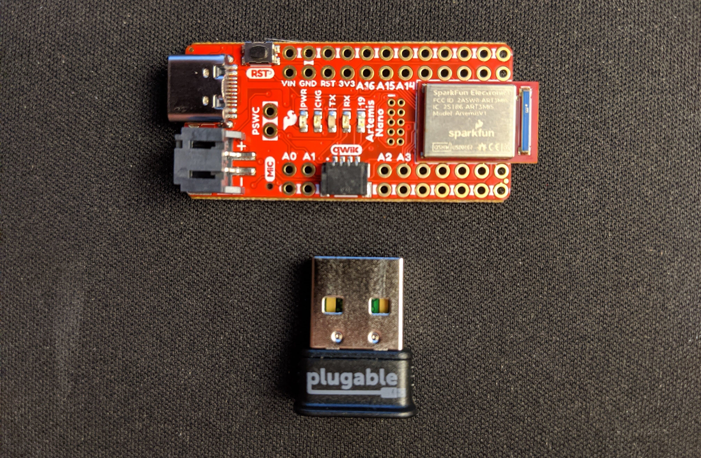

ECE 4960 - Fast Robots - Fall 2020 ghk48@cornell.edu - Ithaca, NY
Labs
Lab 1: The Artemis Board

Lab 2: Bluetooth
Lab 3: Characterize Robot #4
Lab 4: Open Loop Control
Lab 5: Obstacle Avoidance
Lab 6: Inertial Measurement Unit
Lab 7: Odometry
Lab 8: Mapping
Lab 9: Planning
Lab 10: PID Control
Lab 11: Inverted Pendulum
About
ECE 4960: Fast Robots is a new class in the Electrical and Computer Engineering department at Cornell University taught by Assistant Professor Kirstin Petersen.
Gregory Kaiser is a graduate student pursuing a M.Eng. in ECE at Cornell University.
Lab 1 was focused on getting started with the Artemis board while testing a few of its features.
Lab 1 Report
Parts 1 & 2
These steps involved obtaining the latest version of the Arduino IDE and SparkFun's Apollo3 support pack while following the rest of
Sparkfun's setup tutorial. While this did involve some download time, it was not a labor-intensive process.
Part 3
Once everything was installed correctly, I compiled and uploaded the "Example: Blink it Up" sketch to the Artemis. To confirm that it was correctly uploading, I also changed the delay time in the sketch and made sure that the blink rate changed accordingly.
Parts 4 & 5
The sketch "Example2_Serial" confirmed that the serial port was both sending and recieving information accurately. Running "Example4_analogRead" took a bit more time, since the Artemis needed to heat up over a minute or so. To speed up this process, I held the board near a hot spot on my laptop. The temperature reading rose to about 35 degrees C, at which point I removed the board from heat and watched the temperature drop again.
Part 6
A more interesting test involved the "Example1_MicrophoneOutput" sketch where loudest frequency of sound was printed to the serial port. I whistled a few tones to test it out, and then wrote a short block of code inside the example sketch to turn on the blue debug LED on output pin 19 when a tone is heard. Below line 123, I added the following:
This additional code worked almost immediately, allowing me to run the sketch on the Artemis untethered by attaching a 3.7V LiPo battery.
Lab 1 Supercut Video:
This is a supercut of each of these milestones in order.
LAB 2: Bluetooth Connection to the Artemis
Lab 2 Goals
The walkthrough for Lab 2 guided me through connecting to the Artemis through bluetooth. In this lab the latency and quality of the connection is tested by sending and receiving a number of data packets in both directions.
Lab 2 Report
Setup
I first successfully set up the class VM, downloaded the provided bluetooth source code, and installed the bleak library. The provided Bluetooth USB Adapter is passed through to the VM by setting its visibility in the VirtualBox settings. My most reliable method for a consistent connection was to make sure that the bluetooth adapter drivers were uninstalled on my Windows machine when a connection was established through the VM.
Connect
By running main.py in the VM, a connection was established to the Artemis. The MAC address of the Artemis is displayed, so I copied that text and replaced cache: None with the appropriate address in settings.txt. Running main.py now connected more consistently to the board, and the Artemis responded with a slower blue LED flash to indicate success.
Ping
Running await theRobot.ping() pings the robot and keeps track of how long the round trip data transfer takes. When a ping is requested, the Artemis sends back a command with type PONG instead. The message being sent is a cmd_t struct, with the same data as was received. Printing the data over the Serial port, and checking the source code on line 67 of ece4960robot.py, reveals that the data being sent in a ping is a bytearray of the command number followed by 98 zeros (essentially, length=0 and the 97-byte-long data array is empty). This means the entire command sent back and forth is 99 bytes total. This is the maximum size for a cmd_t as curently structured.
I copied the output from the program (data transfer latencies) into a text file to parse in Python to measure the delay.
The average latency was about 0.117s and varies from a minimum of 0.108s and a maximum of 0.135s around that value. The bimodal distribution is likely due to dropped packets of data. I'm not sure how to solve this problem, and it has been a persistent issue all week.
Dividing 99 bytes by .117s gives a bit rate of approximately 6770bps, which is lower than one of the lower-bit-rate wired serial options of 9600bps.
I did write a separate python and Arduino script to ping the Artemis over a wired serial connection to test this higher data rate, but was unable to test it side-by-side with a similar data structure in time.
Float Request
Sending await theRobot.sendCommand(Commands.REQ_FLOAT) instead of the ping command asks the Artemis to send a float instead of a piece of text.
To catch this command, case: REQ_FLOAT is fleshed out in the Arduino sketch. The command type and length is set as shown. At the top of the program, I calculated pi and stored the value in a float (float pi = 4*atan(1);) to place at the start of the data field, and cast that position to a float pointer. The size of this data transfer is therefore the size of the float, the size of the length field, and the size of the command type combined.
case REQ_FLOAT:
Serial.println("Going to send a float");
res_cmd->command_type = GIVE_FLOAT;
res_cmd->length = sizeof(float);
((float*)res_cmd->data)[0] = pi;
amdtpsSendData((uint8_t *)res_cmd, sizeof(float)+sizeof(uint8_t)+sizeof(cmd_type_e));
break;
Code already written in main.py unpacks this float (unpack("<f",data)) and displays pi. (output: 3.1415927410125732). This is only accurate to the 6th decimal, which makes sense with float's limitations in general. The rest of this data is junk, and therefore comparisons of floats read in this manner must be performed more carefully to remove this extraneous/incorrect information.
Data Rate
Beginning a constant stream of data from the Artemis allows me to see how fast I can parse data being sent over bluetooth and display on-screen. I started by running theRobot.testByteStream(25) in main.py, and added the line print(unpack("<f",data)) in the case that code == Commands.BYTESTREAM_TX.
On the Arduino side, the command type was already set under the if (bytestream_active) case. To start, I simply loaded a 32-bit integer into res_cmd->data, as with the float transfer. This confirmed that the data was at least being sent and received correctly.
Expanding this to more data, I made a struct called packet which I modified to store more than just a single 32-bit number. At one point, it looked like:
struct packet{
uint32_t mils;
uint32_t count;
};
After loading data into this struct, I used memcpy((void *)res_cmd->data, (void *)ptr_eg, sizeof(packet)); to place the entire stream of data into the data field. The void pointer ptr_eg refers to a pointer to the filled packet struct of data.
Of course, this meant modifying the call to unpack() in the python code. Reference was made regularly to the formatting string documentation on python.org: "Interpret bytes as packed binary data" .
In the above case of 2 32-bit integers, 909 of 1181 packets were dropped. This is a terrible 23% success rate. I am still looking into whether or not this is some error on my end, but I am forced to report it as-is.
I sent a stream of 32-bit millis() counts, 64-bit micros() counts, and a 32-bit number of transfers sent (along with the 2 bytes of command metadata, in all cases). This stream only had a 26% success rate over more than 2300 attempted transfers.
I also sent a stream with five 32-bit numbers, a 32-bit transfer-count variable, and another 5 64-bit numbers, per transfer.
The data struct was:
And the parser was:unpack("<iiiiiiQQQQQ",data)
This only had a 17% success rate on transfer, unfortunately. Some results shown below:
The spikes in the histogram data likely correspond to integer numbers of dropped packets.
Packing data and sending it over bluetooth is clearly going to be useful for this class, so I will have to put time into boosting the successful transfer rate with some tinkering in the next couple of weeks. Dropping over 70% of packets sent will be too unreliable for anything useful.
Lab 2 Supercut Video:
[embed video]
This is a supercut of each of these steps in order, since each was short enough to combine them together.